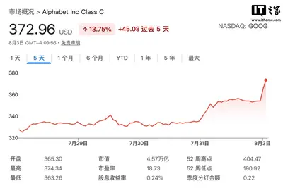
模型與研究AI 每日新聞彙整
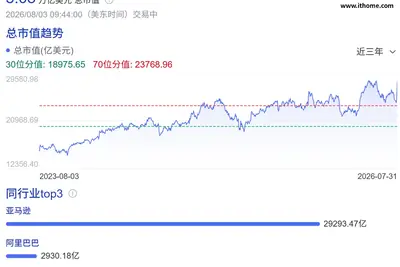
企業與資金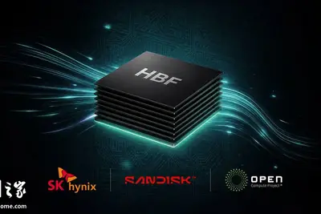
晶片與基礎設施 政策與法規
政策與法規
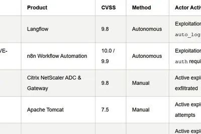
安全與倫理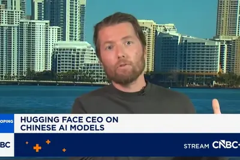
開源社群全部主題
模型與研究
重點3 家媒體報導alibabaanthropic3.8
阿里巴巴發表 Qwen3.8-Max，稱效能比肩美中頂尖模型
阿里巴巴推出參數規模達 2.4 兆的 Qwen3.8-Max，宣稱效能可與 Anthropic、OpenAI 及月之暗面 Kimi K3 等頂尖模型匹敵，並已大規模開放用戶使用。同一時期，DeepSeek 發布的 V4-Flash 以每次基準測試約 0.03 美元的成本，成為 Artificial Analysis 比較中成本最低的模型，不到 Claude Fable 5 的百分之一，凸顯中國模型在性價比上的競爭力。
重點2 家媒體報導astraopenai
OpenAI 低調揭曉下一代模型 Astra，宣稱破解十項數學難題
OpenAI 於 8 月初發表部落格文章，揭露內部版本的下款主要模型 Astra 在數學及理論電腦科學領域取得 10 項突破性成果，涵蓋高維幾何、編碼理論、群論、量子複雜度及格基密碼學等，其中多項問題已停滯超過 10 年。值得注意的是，OpenAI 並未公布任何 benchmark 分數，僅以實際研究成果作為能力證明。
- iThome OpenAI新模型Astra取得10項數學突破，橫跨密碼學與量子複雜度
- TechOrange 科技報橘 OpenAI 悄悄公布下一代模型 Astra，卻沒公布任何 benchmark 分數
產品與應用
2 家媒體報導applefeelmacbook
蘋果 MacBook Air 因記憶體短缺交期延逾一個月
受全球記憶體短缺影響，蘋果 MacBook Air 出貨時間被拉長至一個月以上，顯示記憶體供應緊張已開始波及消費端產品線。另一則報導指出，蘋果長期醞釀的 Siri AI 改版終於上線，雖讓 Siri 真正成為合格的 AI 助理，但在當前競爭格局下已難稱革命性。
icloud+siriios
庫克透露蘋果仍在評估 iOS 27 Siri AI 算力成本與收費方式
蘋果執行長庫克在財報會議上表示，公司仍在評估 iOS 27 中 Siri AI 功能的運算成本與收費模式。蘋果計畫盡可能將 AI 任務拆分至裝置端本地處理以降低伺服器開支，必要時再透過私有雲運算或 Google Gemini 處理。外傳方案可能將 Siri AI 使用額度與 iCloud+ 訂閱綁定，依 50GB、200GB、2TB 等方案提供不同上限。
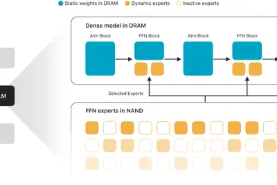
dronescompanylets
美國 AI 技術助烏克蘭五萬架廉價自殺無人機自主追蹤目標
一家美國公司以一億美元合約提供烏克蘭五萬架低成本自殺無人機 AI 自主目標追蹤能力。這批無人機原本造價低廉、依賴人工操作，導入 AI 後可獨立鎖定目標，被視為低成本無人機與 AI 結合的軍事應用指標案例。
vibe-codingsuperblocksaws
AWS 將 vibe-coding 新創 Superblocks 嵌入企業私有雲
AWS 宣布允許 vibe-coding 工具 Superblocks 嵌入 AWS 客戶的私有雲環境，代表應用程式與底層模型脫鉤的趨勢加速。企業可在自有基礎設施內使用 AI 輔助程式碼生成，兼顧資料合規與開發效率。
chatgptcongressfavorite
美國國會成 ChatGPT 最大政府用戶 辦公室用於撰寫備忘錄與法案摘要
根據眾議院支出紀錄，OpenAI 的 ChatGPT 是國會山莊付費 AI 工具中使用量最高的產品，各議員辦公室將其用於撰寫備忘錄、摘要法案及協助處理選民通訊。這顯示生成式 AI 已深入美國立法部門日常工作流程。
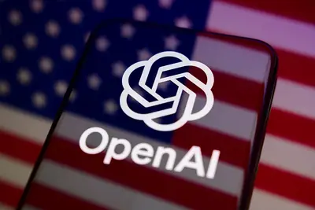
- TechCrunch AI Congress’ favorite AI tool? ChatGPT
commerceleadersshopping
AI 購物搜尋量一年暴增 200% 成為電商領導者首要優先事項
調查顯示，AI 驅動的購物搜尋在一年內成長 200%，86% 的電商領導者認為 AI 正在拉高消費者對服務體驗的期待。這項數據反映生成式 AI 已從實驗性質轉為零售業核心競爭力。
minimaxinteldeepseek
英特爾中國接連適配 DeepSeek 與 MiniMax H3，搶攻在地 AI 商機
繼率先支援 DeepSeek 系列模型後，英特爾中國再度完成與中國 AI 新創 MiniMax 最新多模態生成模型 MiniMax H3 的 Day 0 適配，積極搶攻中國本地 AI 市場商機。
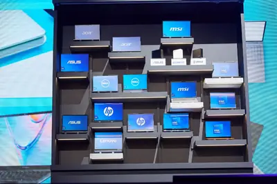
- DIGITIMES 英特爾中國接連適配DeepSeek、MiniMax H3 搶攻AI本地商機
pixelprogoogle
Google Pixel 11 Pro 渲染圖流出，後相機模組與 RGB 閃光燈成焦點
Google Pixel 11 Pro 官方渲染圖曝光，推出 Dune 與 Sterling 兩色。最大設計變化在於全黑後相機模組與加入 RGB 燈效的 LED 閃光燈，可在使用 Gemini AI 助手時提供視覺化回饋。
企業與資金
重點amazon
亞馬遜市值首破 3 萬億美元，貝索斯擬出售近 41 億美元股票
受第二季財報優於預期、AI 需求帶動 AWS 雲端業務營收增速創 18 季新高激勵，亞馬遜股價創歷史新高，市值首次突破 3 兆美元。創辦人貝索斯隨即申報出售 1500 萬股、市值約 40.7 億美元的股票；亞馬遜同時上修 2026 全年資本支出指引，並看好 AI 長期兆美元營收空間。
amazongoogle
中信證券：AI 投資回報閉環成形，看好光通訊板塊中長期景氣
中信證券研報指出，北美四大雲廠商 2026 年第二季資本支出維持高速增長，亞馬遜 AWS 營收、營業利潤率及 Backlog 均超預期，執行長 Andy Jassy 表示伺服器與網路設備投資可在不到三年回本，正面回應 AI 投入 ROI 質疑。在 AI 驅動雲端業務成長下，AI 集群規模將持續擴張，光互連受惠於 GPU 配比提升、埠速率升級與「光進銅退」趨勢，中長期景氣看好。
datacenteramazon2023
亞馬遜 AI 與雲端投資擴大，過去 12 個月自由現金流首度轉負
亞馬遜 2026 年第 2 季財報表現優於市場預期，但因 AI 與雲端基礎設施投資急速擴大，過去 12 個月自由現金流自 2023 年以來首度轉為負值。市場關注科技巨頭在 AI 基建支出與折舊計算方式上的分歧。
- DIGITIMES 資料中心設備折舊如何算 AI科技巨頭莫衷一是
5000datacenter2028
城堡證券預估 AI 晶片建設將掀 5,000 億美元發債潮
城堡證券預測到 2028 年，全球公開與私募信貸市場將出現超過 5,000 億美元債務，以支援 AI 資料中心晶片採購與設施建設，規模相當於彭博美國投資級債券指數的 5% 以上，債券多以 3 至 5 年期為主。
visabiocatch
Visa 以 24 億美元收購 BioCatch，強化 AI 詐欺防禦
Visa 宣布以 24 億美元現金收購詐欺偵測新創 BioCatch，因應生成式 AI 驅動的詐騙與帳號接管事件激增。Visa 估計詐欺每年造成全球經濟損失逾 1 兆美元，凸顯支付業者強化防禦的競賽。
quarterpalantiralex
Palantir 單季獲利 10 億美元，CEO 批 AI 實驗室如「馬克思主義」
Palantir 上季繳出 10 億美元獲利，執行長 Alex Karp 再度警告 AI 前沿實驗室對企業而言過於不可信，批評其運作模式猶如「馬克思主義」，呼籲企業審慎採用。
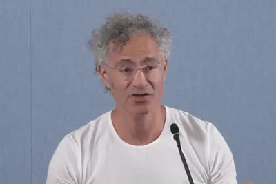
117
外資 7 月密集調研 A 股，電子與電力設備受青睞
7 月以來外資機構累計調研 117 家 A 股上市公司，電子、機械設備、電力設備三大行業合計占比過半。摩根大通、瑞銀證券等認為 AI 具長期產業趨勢，市場對科技板塊盈餘預期持續上修。
designarenamillion
Design Arena 團隊獲 790 萬美元融資，導入人類審美評分訓練 AI 模型
Design Arena 為 AI 模型提供人類設計品味評估的平台，全球已有 530 萬用戶，協助前沿實驗室訓練模型。團隊宣布完成 790 萬美元融資，目標將「美感」量化為模型可學習的訊號。
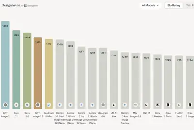
backlashtripinfluencers
OpenAI 首場網紅奢華旅遊行程引發輿論反彈
OpenAI 首次邀請網紅參加品牌奢華旅遊行程，卻在社群媒體上引發負面聲浪。爭議反映在 AI 取代創作者疑慮升溫之際，AI 公司與網紅行銷合作的敏感性。
晶片與基礎設施
重點hbmhbfgp1
SK 海力士與閃迪將發布 HBF 首個標準規範，鎖俠推 PCIe Gen6 AI 固態硬碟
SK 海力士與閃迪宣布將於 FMS 2026 共同發布高頻寬閃存（HBF）首個標準規範，定義 8 層與 16 層 NAND 堆疊、最高 512GB 容量及三等級頻寬標準，定位介於 HBM 與 SSD 之間的新型 AI 儲存層級。同一時間，鎖俠推出 GP1 XL-FLASH PCIe Gen6 固態硬碟，隨機讀取達 100M IOPS，支援 GPU 直接存取高速閃存，鎖定 AI 系統以更低成本擴充資料集。
雲端 AI 晶片供不應求，IC 設計業搶產能、簽長約再現
雲端 AI 晶片需求持續高漲，IC 設計業者指出，除了技術與成本實力，能否穩定取得足夠先進製程產能已成為客戶選擇供應商的關鍵。包產能、簽長約等做法再度浮上檯面，反映 AI 晶片產能爭奪戰白熱化。
- DIGITIMES 雲端AI晶片不只技術還要有搶產能本事 包產能、簽長約再現
foplpcoposcompute
FOPLP 率先量產、CoPoS 接棒，玻璃封裝技術邁向新階段
AI 晶片算力快速提升驅動先進封裝朝更大面積、更高頻寬與更高整合度發展，傳統 ABF 載板與矽中介層面臨成本、翹曲與封裝效率瓶頸。FOPLP 已率先量產，CoPoS 與玻璃基板、玻璃中介層被視為下一世代先進封裝技術布局重點。
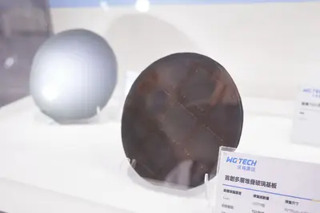
- DIGITIMES FOPLP率先量產、CoPoS接棒 玻璃封裝技術邁向新階段
robot
比亞迪加速自研 4 奈米璇璣 A3 晶片，中系車廠布局 AI 下半場
在汽車電子電氣化與中國供應鏈自主化趨勢下，中國車廠近年跨足晶片自研並直攻 7 奈米至 4 奈米先進製程。比亞迪加速推出 4 奈米璇璣 A3，目標不僅限於智慧車，更延伸至 AI 機器人等應用，展現中系車廠以自研晶片搶攻 AI 下半場的四大策略布局。
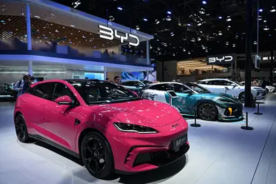
- DIGITIMES 比亞迪加速自研晶片推4奈米璇璣A3 中系車廠四大策略布局AI下半場
nvidiacomputefunding
NVIDIA 以包廠轉租模式打造 AI 算力帝國，投入達百億美元
DIGITIMES 以漫圖解析 NVIDIA 透過「包廠轉租」模式重金布局 AI 算力，投資規模達百億美元等級，鞏固其在 AI 基礎設施的關鍵地位。
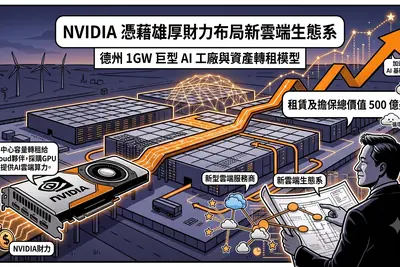
- DIGITIMES 【漫圖秒懂】百億美元大對賭 NVIDIA「包廠轉租」重金打造AI算力帝國
amdheliosvera
AMD 第二季財報將出爐，Helios 系統對標 NVIDIA Vera Rubin
超微（AMD）即將發布第二季財報，市場關注其 AI 業務表現。AMD 推出 Helios 系統，力拚與 NVIDIA Vera Rubin 平台競爭，產品已準備出貨給客戶。
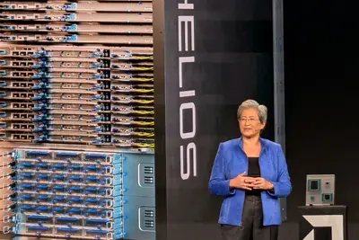
- 科技新報 TechNews AMD 第二季財報表現受關注，Helios 系統力拼 Vera Rubin 即將出貨客戶
政策與法規
重點
美國法院批准生成式 AI 侵權訴訟，劃下法律界線
美國舊金山聯邦地方法院 7 月批准一起針對 AI 巨頭的著作權侵權訴訟，案件進入實質審理階段。此案被視為生成式 AI 訓練資料合法性的指標性判決，將影響模型訓練與資料使用的法律邊界。
- 科技新報 TechNews AI 學得愈多，侵權風險愈高？法院劃下生成式 AI 的第一道法律界線
重點robloxchatgptregulation
歐盟擬將 ChatGPT 與 Roblox 列為超大型平台嚴管
歐盟最快 8 月將 ChatGPT 與 Roblox 列入「超大型線上平台」（VLOP），適用更嚴格的內容審查與透明度義務。此舉可能升高美歐之間的科技貿易摩擦。
- 科技新報 TechNews 歐盟擬將 ChatGPT 及 Roblox 列「超大型平台」嚴格監管，美歐科技貿易戰恐升溫
重點transparencyruleseffect
歐盟 AI 法案新章生效 要求標示聊天機器人與深偽內容
歐盟 AI 法案中的透明度義務於 8 月 2 日正式生效，要求企業揭露使用者是否正在與 AI 模型互動，以及內容是否由 AI 生成或深偽技術產製。此規範屬於 AI 法案中較早落地的條款之一，影響所有在歐盟提供 AI 服務的業者，違規者將面臨罰款。
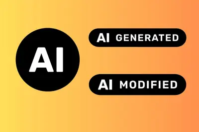
robottrumpprotectionism
川普 AI 保護主義延伸至機器人產業
MIT Technology Review 報導，川普政府的 AI 保護主義政策已擴大至機器人領域，人形機器人產業雖仍處早期、產品常跌倒或踢到小孩，但已成政策角力新焦點。
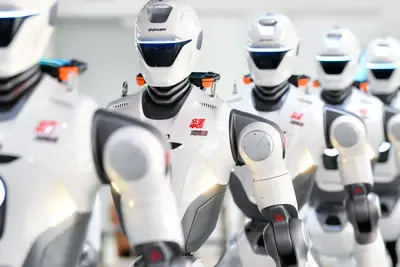
- MIT Technology Review AI Trump’s AI protectionism has come for robotics
安全與倫理
重點hermessafetydeepseek
中國駭客結合 DeepSeek 與 Hermes 代理發動 AI 自主攻擊
Palo Alto Networks 揭露自稱 knaithe 與 KnYuan 的中國駭客組織，利用 AI 代理 Hermes 搭配 DeepSeek 大型語言模型，對至少 406 個企業組織發動 AI 自主攻擊，鎖定 7 種應用系統的已知漏洞。與過往純 AI 自主攻擊不同，這批行動結合手動操作以擴大影響範圍，並曾滲透泰國財政部。
regulationgenerative
AI 遭用於越獄對話，心理健康監管面臨漏洞危機
生成式 AI 普及下，AI 心理諮商與對話的監管日益嚴格，但有心人士利用 AI 規避心理健康相關限制，使監管機制出現「漏洞爆炸」危機，凸顯平台審核與技術防護的不足。
- 科技新報 TechNews AI 竟成越獄工具，心理健康監管面臨「漏洞爆炸」危機
ai-supervisedremoteexam
AI 監考遠端考試出包，五萬八千名學生須重考
一場由 AI 監考的遠端考試因系統問題導致五萬八千名學生成績異常，高分人數暴增五倍，主辦單位宣布全體重考。事件凸顯 AI 監考技術在大型考試中的可靠性風險。
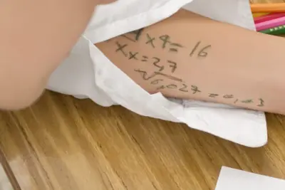
bothcyberweapon
CrowdStrike 警告：AI 既是網路武器也是龐大攻擊目標
CrowdStrike 報告指出，企業部署的 AI 工具一方面會觸發大量可疑資安告警，另一方面也成為網路犯罪集團覬覦的攻擊目標。AI 系統本身的安全防護已成企業資安新戰場。
songdidmusic
饒舌歌手 Fenix Flexin 熱門歌曲 Rubberz 遭質疑由 AI 生成
饒舌歌手 Fenix Flexin 的新歌「Rubberz」爆紅，但有樂迷宣稱握有證據顯示該曲由 AI 製作，引發嘻哈圈論戰。此事件凸顯生成式 AI 音樂已難以肉眼辨識，業界與聽眾對 AI 創作的接受度爭議持續延燒。
meatproxydon
Simon Willison 籲勿當 AI 內容的「肉代理人」
開發者 Simon Willison 引用 Niklas Gruhn 的「肉代理人」（meat proxy）一詞，呼籲使用者不要直接轉貼 AI 輸出，應閱讀、理解並驗證後再以自身語言撰寫回應，強調人為判斷的附加價值。
- Simon Willison Don't be a meat proxy
開源社群
huggingface
Hugging Face 執行長：中國在 AI 競賽中領先，美國實驗室各自為戰
Hugging Face 執行長德朗格接受 CNBC 採訪時警告，中國因擁抱開放科學與開放模型，生態系彼此借鏡使技術進展遠快於美國。他認為美國前沿實驗室彼此封閉、未共享成果，按目前速度中國年底前可能主導整個前沿 AI 領域。
urlhttpscomments
Hacker News 熱議：OpenAI 數學突破、AirLLM 單卡跑 70B 模型
Hacker News 上多則高熱度討論聚焦於 OpenAI 公布的十項數學與理論電腦科學進展（391 點、676 則留言），以及 AirLLM 專案展示以單張 4GB GPU 推論 70B 級模型（183 點）。另一篇熱門文章則建議開發者手動重新輸入 LLM 產生的程式碼，以避免累積「認知債」（364 點、302 則留言）。
- Hacker News (100+) Ten advances in mathematics and theoretical computer science
- Hacker News (100+) AirLLM 70B inference with single 4GB GPU
- Hacker News (100+) Prevent cognitive debt by manually retyping LLM-generated code
promptdavidcrawshaw
工程師分享自動化提示詞 用 LLM 夜間自動同步開源軟體更新
開發者 David Crawshaw 分享一段提示詞範本，設定為每日凌晨自動執行：抓取上游軟體更新、將本地修改 rebase 至上游、驗證功能正常後取代現行版本。此做法展示如何將 LLM 與 cron job 結合，實現開源專案的自動化維護。
- Simon Willison Quoting David Crawshaw's prompt
其他
embercoffeekeep
Ember 智慧保溫馬克杯 2 降價促銷，可維持飲品溫度數小時
Ember Smart Mug 2 透過自加熱技術讓咖啡、茶或熱可可長時間維持理想溫度，目前正在折扣販售。屬消費性電子產品促銷資訊，與 AI 技術關聯性低。
t-mobilesamsungflip
T-Mobile 預購三星 Galaxy Z Flip 最高折抵 1,100 美元
T-Mobile 新舊客戶預購三星最新摺疊手機 Galaxy Z Flip 可享最高 1,100 美元折扣，含粉色款。屬電信業者手機促銷，與 AI 技術無直接關聯。